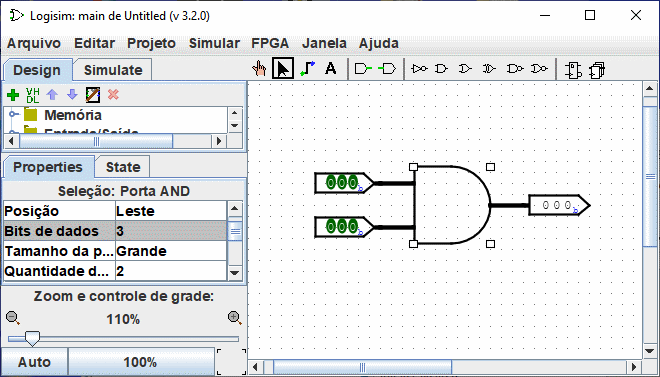
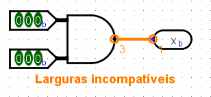

Para criar cabos
Em circuitos simples do Logisim, a maioria das conexões têm um único bit; mas também lhe será permitido criar cabos que enfeixem fios empacotando múltiplos bits. O número de bits que viajam ao longo de um cabo será especificado pela sua bits de dados.
Cada entrada e saída em cada componente de um circuito tem uma largura de bits associada a ela. Na maioria das vezes a largura do bit será 1, e não haverá como mudar isso, mas muitos dos componentes predefinidos do Logisim incluem atributos cujas as larguras de bits de suas entradas e saídas poderão ser escolhidas.
A tela abaixo apresenta um circuito simples onde se encontra uma operação AND de duas entradas de três bits cada. Observe que os três bits da saída resultam dessas entradas. Todos os componentes tiveram seus atributos Bits de Dados alterados para lidar com três bits, na tela, como exemplo, alguns dos atributos da porta AND também são mostrados, e dentre eles atributo dos bits de dados igual a 3.

Todos os componentes no Logisim possuem uma largura definida para cada bit de entrada e saída. Por outro lado, a largura em bits de uma conexão é indefinida. Ela se adaptará aos componentes a que estiver ligada. Se um fio conectar dois componentes que exijam larguras diferentes, o Logisim irá reclamar que são "larguras incompatíveis" e indicará onde com indicações em cor laranja. Abaixo, o atributo de bits de dados (Data Bits) do pino de saída foi alterado para 1, e por isso o Logisim reclama que não pode conectar um valor de três bits com outro de um bit apenas.

Conexões entre elementos incompatíveis (desenhadas em cor laranja) não transportarão sinais.
Para conexões de um único bit, é possível ver logo o que o fio transporta através das cores verde-claro ou verde-escuro do Logisim, dependendo do valor. Ele não apresentará valores para as conexões multi-bit: elas ficarão simplesmente em preto. Você poderá, no entanto, examinar a conexão, clicando com a ferramenta Testar (Poke) ( ).
).

Esse recurso para sondagem é útil para depuração de circuitos usando cabos.
Próximo: Distribuidores (Splitters).